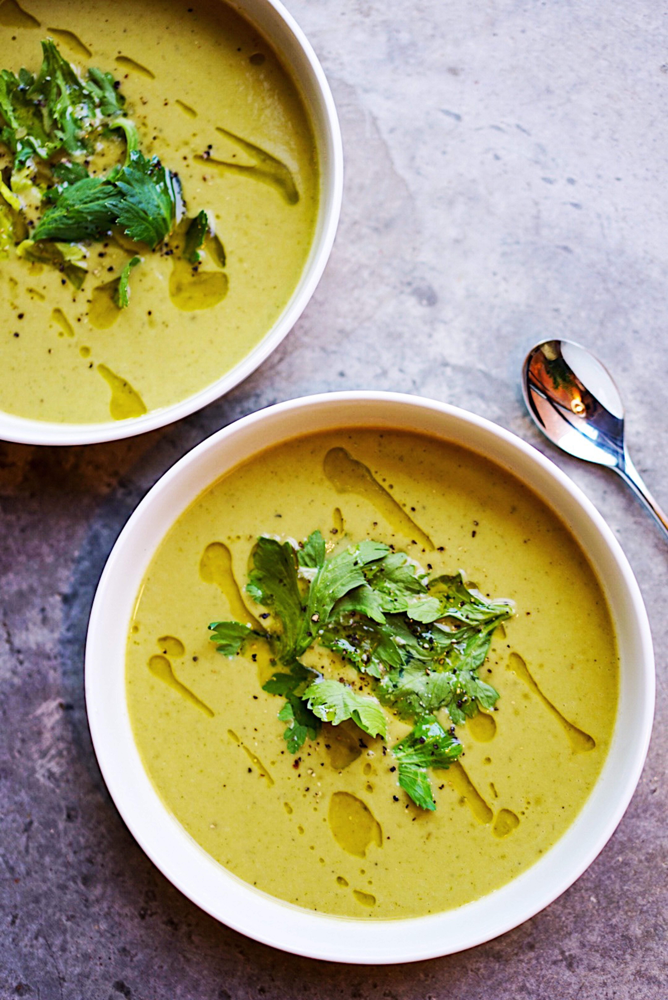

Soup

This rich and creamy Dutch tomato soup, made with very ripe plum or vine tomatoes, was inspired by the delicious bowl of tomato soup served at Café de Jaren in Amsterdam.
ingredients
- onion 1 large, diced
- carrot 1, finely chopped
- celery 1 stick, finely chopped
- butter 50g
- thyme
- bay leaves 2
- very ripe plum or vine tomatoes 500g, roughly chopped
- chicken stock 850ml
- crème fraîche 8 tbsp
- basil a few leaves
Steps
- Cook the onion, carrot and celery in the butter for 10-15 minutes until really soft. Add the herbs and cook for a minute then
tip in the tomatoes and chicken stock. Simmer for 30 minutes, fish out the herbs, add 4 tbsp of the crème fraîche then use
a stick blender or food processor to whizz until completely smooth
- Season then ladle into bowls, adding another spoon of crème fraîche and a couple of basil leaves to each